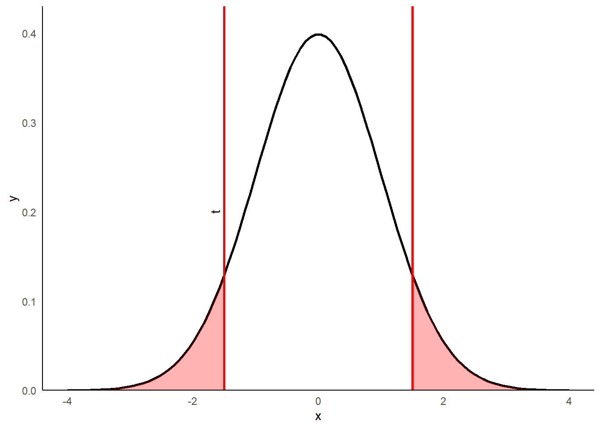

── Attaching core tidyverse packages ──────────────────────── tidyverse 2.0.0 ──
✔ dplyr 1.1.4 ✔ readr 2.1.4
✔ forcats 1.0.0 ✔ stringr 1.5.1
✔ ggplot2 3.4.4 ✔ tibble 3.2.1
✔ lubridate 1.9.3 ✔ tidyr 1.3.0
✔ purrr 1.0.2
── Conflicts ────────────────────────────────────────── tidyverse_conflicts() ──
✖ dplyr::filter() masks stats::filter()
✖ dplyr::lag() masks stats::lag()
ℹ Use the conflicted package (<http://conflicted.r-lib.org/>) to force all conflicts to become errorsx_vals <- seq(-4, 4, length = 100)
y_vals <- dnorm(x_vals)
data <- tibble(x_vals, y_vals)
data %>%
ggplot(aes(x_vals, y_vals)) +
geom_line(linewidth = 1, color = "black") +
theme_classic() +
theme(axis.ticks = element_blank(),
#axis.text.x = element_blank(),
#axis.text.y = element_blank()
) +
xlab("x") +
ylab("y") +
geom_vline(xintercept = 1.5, color = "red", linewidth = 1) +
geom_vline(xintercept = -1.5, color = "red", linewidth = 1) +
scale_y_continuous(expand = c(0, 0), limits = c(0, 0.43)) +
stat_function(fun = dnorm,
xlim = c(1.5, 4),
geom = "area",
fill = "red",
alpha = 0.3) +
stat_function(fun = dnorm,
xlim = c(-4, -1.5),
geom = "area",
fill = "red",
alpha = 0.3) +
annotate("text", x=-1.65, y=0.2, label="t", angle=90)